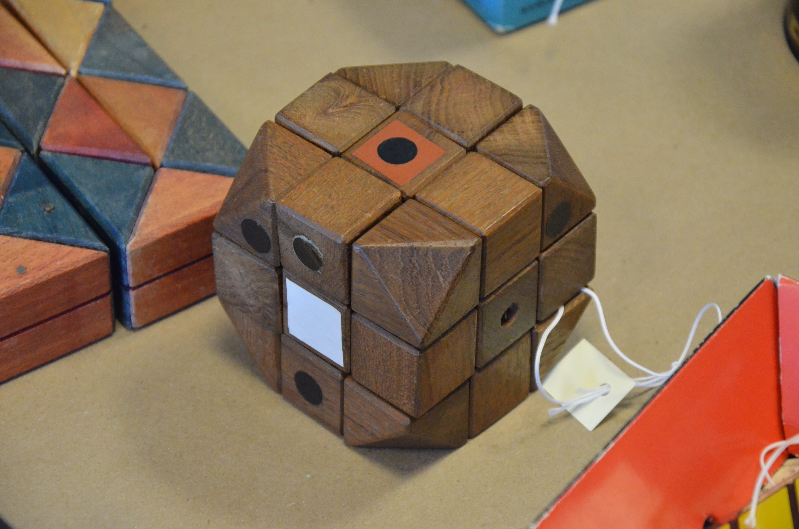
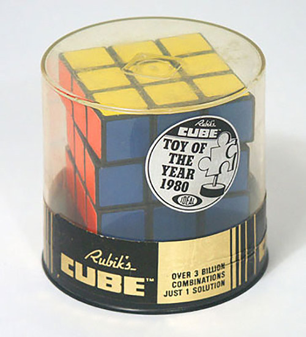
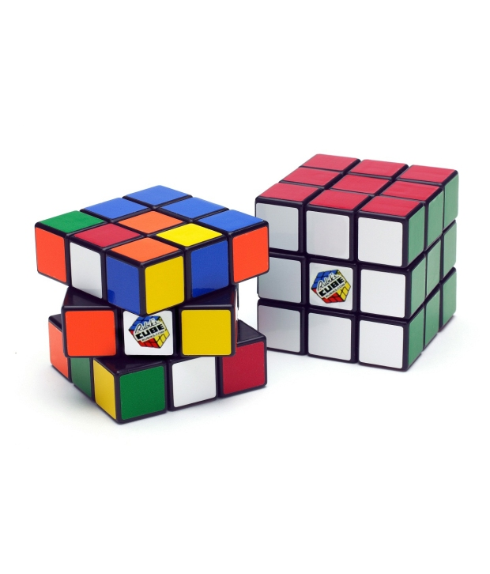

Have you ever thought about how the Rubik’s cube was created? To many, the mechanism of a cube is a confusing thing to look at. It has changed a lot since it was first released. Here, we will be exploring the creation of the Rubik’s cube.
The first Rubik’s cube was invented by Erno Rubik in 1974. The first prototype was made of wood and had only a single coloured sticker on the centre tile of each face.
Erno Rubik did not know how to solve it when it was first invented. It took him a month to figure out the solution for the puzzle. In 1977, the first Rubik’s cubes (which were known as “magic cubes”) were sold and distributed in Hungary by Politechnika.
In 1979, the toy was taken to a toy fair. A license was signed by Tom Kremer for the “magic cube” to allow it to be distributed in any country. The Ideal Toy Company took on the distribution and renamed the “magic cube” to the “Rubik’s cube”. It was internationally launched in 1980. Since then, 350 million Rubik’s cubes have been sold.
Nowadays, Rubik’s cubes can be bought both online and in-store. The traditional Rubik’s brand Rubik’s cube is commonly bought in-store (although it can be found online) while speedcubes are typically only found online.